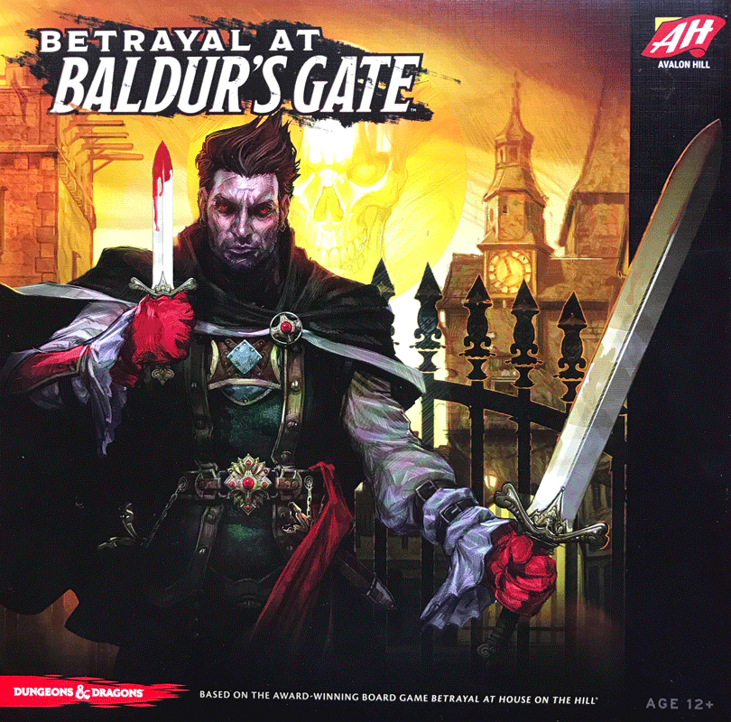
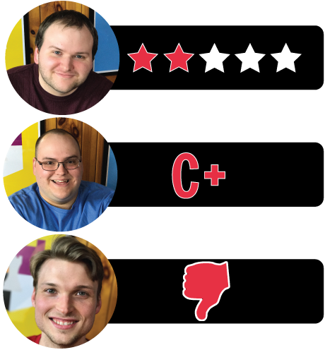

In this Betrayal at Baldur’s Gate review, Board Crazy looks at the Dungeons & Dragons-themed reboot of Betrayal at House on the Hill. Betrayal at Baldur’s Gate was designed by Chris Dupuis & Mike Mearls, and is published by Avalon Hill Games & Wizards of the Coast. In this game, players explore Baldur’s Gate until one of them becomes a traitor, at which point all bets are off! See our review below.

D reviews Betrayal at Baldur’s Gate
 (Author’s note: this review is meant to accompany our gameplay video
and will not go in-depth on the game’s rules. If you’re interested in
learning how the game is played, please watch the video. It’s not bad.)
(Author’s note: this review is meant to accompany our gameplay video
and will not go in-depth on the game’s rules. If you’re interested in
learning how the game is played, please watch the video. It’s not bad.)
Before I begin my review for Betrayal at Baldur’s Gate, there’s something that I feel I need to mention: I don’t like Betrayal at House on the Hill. At all. I appreciate that House on the Hill is pretty well-regarded, but basically nothing about it appeals to me, all the way down to the horror movie tropes that gave it its flavor. So, my optimism going in to this one was somewhat tempered, but the Dungeons & Dragons license gave me a bit of hope. I love D&D, and Baldur’s Gate is about as prestigious a setting as it gets within the official lore. Plus, Mike Mearls is one of the co-designers of the game and if anyone can make a good D&D game, it’s him. So is Betrayal at Baldur’s Gate a marked improvement over the original game? Not really.
This is the character card that keeps track of your stats and features your special ability. In Grim’s case, his special ability is Devotion.
It turns out that these games need more than a fancy Dungeons & Dragons sheen to make them enjoyable to me. For starters, I really don’t dig horror in general, and I feel like it’s a particularly hard sell in the medium of board games. Simply put, it’s basically impossible to make a board game that’s legitimately scary. At best, a board game can be tense in a way that really tests your nerve. Betrayal at Baldur’s Gate, unfortunately, lacks tension. The first half of the game, when everyone is on the same side, is particularly relaxed. At worst, you’ll run into some inconveniences, but you’re just as likely to find a shiny new weapon or item. Things are slightly tenser once the haunt begins and the game becomes competitive, but in my experience, any potential sense of excitement is usually subdued by confusion over the rules or an unbalanced adventure. So, BaBG fails as a horror game. Jenga is scarier.
Now, none of that would matter much if the game was still fun to play. To that end I would offer this: Betrayal at Baldur’s Gate could be fun. I say “could” because I don’t want to make any guarantees, but I’m confident that under perfect conditions a game of BaBG could be a really good time. The revealing of tiles, acquisition of loot, stat tracking, rolling dice, and sudden but inevitable betrayal are all fun mechanics. Unfortunately, the degree of randomness present in this game makes everything a bit of a crapshoot. The distribution of loot and the tiles present on the board once the haunt starts can lead to scenarios where it’s practically impossible for one side to win the game.
The Traitor’s Tome – this rule book outlines the rules for the traitor during the Haunt phase of the game.
Of course, one of the game’s major selling points is that there are fifty different haunts included. So sure, maybe you had one bad game. But who cares when you can play it 49 more times and have a different experience? Well, there are a couple of problems here too. For starters, the first two times we played this game we got the exact same haunt via different conditions. Now, this is probably a statistical aberration, but it’s still lame that it’s even a possibility. More importantly though, having fifty haunts just leads to more problems than replayability. It’s just impossible to balance and playtest that many scenarios, and while that may not bother some people, it’s frustrating to someone like me. To make matters worse, these haunts introduce new gameplay mechanics that aren’t always easy to understand. Too add to that, the main rulebook usually offers no insight on how to deal with the quirks and caveats of the various haunts. Are all omens considered items or just some of them? I’m still not 100% on that. The game would be better if they had focused on a smaller number of really good haunts, with greater balance and rules clarity.
So, ultimately, my feelings on Betrayal at Baldur’s Gate are basically the same as they are for Betrayal at House on the Hill, despite the D&D trappings. And maybe I shouldn’t be surprised by that, since Dungeons & Dragons-licensed games often have nothing to do with what makes it fun in the first place: character creation and roleplaying. Oh, and dice rolling. It’s a real shame they couldn’t adapt the game to work with d20s and custom characters in order to make it feel a bit more like proper D&D. The painted miniatures included for the PCs are a nice touch, at least. So, those are my thoughts. If you like the original Betrayal game, then I imagine you will enjoy this one as well, especially if you prefer a fantasy setting to a horror one. But if you’re like me and didn’t enjoy the original or you’re simply bothered by a lack of cohesion in your board games, then I recommend giving this one a pass.
D’s Rating: Two Stars out of Five.
Will reviews Betrayal at Baldur’s Gate
Something tells me that I enjoyed Betrayal at Baldur’s Gate more than my colleagues, and that’s completely fine. After all, the game is hardly what I’d call “polished”, and many elements of it are rather frustrating. Honestly, I had only played Betrayal at House on the Hill a couple times, and I remembered that those sessions were pretty sloppy. These memories enabled me to temper my expectations for Baldur’s Gate, and I’m glad I did since that allowed me to see some of the good in this tabletop game. Yes, there are some pretty glaring negatives, but there are also some satisfying positives.
Starting with some of the good, the components included in the box are almost uniformly great. The location tiles are well made, and their artwork is catching and effective in regards to immersion in the setting. In fact, attractive art permeates everything in Betrayal at Baldur’s Gate’s box – it’s a real plus compared to a lot of similar games. My favorite physical elements of the game are the player character miniatures. They’re highly detailed and painted, and they could easily double as minis in a game of D&D. In other words, they’re amazing. However, it’s important to remember that the physical components are, in many ways, window dressing for some of the issues with the gameplay.
The Secrets of Survival – this rule book outlines the rules that the heroes must follow during the Haunt phase of the game.
Anyone who’s ever gamed knows that a good rulebook goes a long way in tabletop gaming. When it comes to Betrayal at Baldur’s Gate, I’d call the rulebook “frustratingly adequate”. Most of the information that you’ll need to complete a session is in there, but specific information is often not the easiest to find. And there’s a lot of moving parts in this game, so you will be referring to rulebook frequently. Not being able to find the answers to your questions quickly will slow down your session of Baldur’s Gate – that’s almost a guarantee. Still, you will eventually get used to the rules and things will speed up. It just takes entirely too long to get to that point.
Eventually, you’ll reach the point in every game of Betrayal at Baldur’s Gate when the betrayer is revealed and the Haunt begins. This should be one of the best moments in the game, but it was (for our group) one of the most annoying. On one hand, we did enjoy that the players split apart so they can read their specific mission in separate rooms. To clarify, there are two different handbooks that are included in the box along with the rulebook. One handbook is for the good guys; the other is for the betrayer, the bad guy. These handbooks include instructions for all 50 haunts in the game. It was these instructions that often bothered us. For instance, the player utilizing the monsters is supposed to give up all of their “items”, but there aren’t clear definitions of what constitutes an item. After all, some of the Omen cards are clearly items, such as weapons or armor. But other Omens are companions, such as fey creatures. Are we supposed to treat a fey like it’s an item? We were forced to house rule this, and we ended up deciding that companions weren’t items. How a question like this was overlooked during playtesting is perplexing to me, and I’m sure other players like you will have similar inquiries.
Once we were able to get past the “Item vs. Omen” debate, the game’s pacing picked up again. The first few minutes of the Haunt are really fun, as both parties are trying to ascertain their opponent’s objective. Unfortunately, we quickly gleaned that Betrayal at Baldur’s Gate was designed with more than three players in mind. In a 3-player game, being the monster is way too easy (unless you’re the unluckiest dice roller ever). *Video Spoiler* In the video, you’ll see that I voluntarily sacrificed one of my minions to allow D and Graham to have a chance to win. My point is – I shouldn’t have had to do that. Instead, the designers should’ve re-balanced some of the Haunts for games with fewer than four players. It makes me think – many of these issues came up immediately in our first 3-player session, so I don’t know how they didn’t during play-testing. Perhaps this game wasn’t play-tested that much with 3-player groups, which would be a forgivable oversight, given the amount of Haunts and other variables. I do think this game can be a lot of fun if you’re playing with four or more people, so that’s how I recommend it be played.
Event, Item, and Omen Cards – the tiles you pick up throughout this game have one of these symbols on it. When you draw a tile, you also pick up the top card of the corresponding deck.
Even with all of these nagging problems, I still enjoyed a lot of the gameplay, especially how it encourages strategy when setting up the tiles. Betrayal at Baldur’s Gate starts off as a cooperative experience, but then transitions into a competitive battle – that’s also really cool. In addition, sessions move relatively quickly once you get the hang of the rules, and since there are 50 haunts to play, there’s a boatload of replayability. Add all of that to the mostly first-rate components, and you realize there’s a sizeable amount of good things happening here. On the other hand, it’s a darn shame that certain rules are entirely unclear, and that the 3-player variant of this game is occasionally unplayable. It almost feels like Baldur’s Gate was released too early, as this game could’ve used a few more months of play-testing and polishing. Yes, that may have been difficult with 50 haunts, but this game kind of needs it. As it is, Betrayal at Baldur’s Gate is in many ways a reflection of its rulebook – flawed but effective. Effectiveness is nice and all, but I think we all prefer “exceptional”, and this game is not that.
I give Betrayal at Baldur’s Gate a: C+
Graham reviews Betrayal at Baldur’s Gate
The Deck of Many Things – this is an unique and exciting card. You have to roll 4 dice and match the number rolled with the numbers on the card, and follow the instructions.
 Unlike
my colleagues, I never played Betrayal at House on the Hill, so I
didn’t really know what to expect. They mentioned to me that they had
played Betrayal at House on the Hill improperly and wanted to make sure
we get it right this time. They obviously recognized
the mistakes they made when playing Betrayal at House on the Hill, so
Betrayal at Baldur’s Gate should be no problem, right? Not exactly.
This frustrates me because at its core, Betrayal at Baldur’s Gate seems
like a really cool game. Exploring the city of Baldur’s Gate,
collecting weapons and armor, searching creepy catacombs, and finding
cool magical items like the Deck of Many Things all are awesome things
to do. On top of that, one of you becomes a traitor and the others have
to stop that person. How could this NOT be awesome? Well…
Unlike
my colleagues, I never played Betrayal at House on the Hill, so I
didn’t really know what to expect. They mentioned to me that they had
played Betrayal at House on the Hill improperly and wanted to make sure
we get it right this time. They obviously recognized
the mistakes they made when playing Betrayal at House on the Hill, so
Betrayal at Baldur’s Gate should be no problem, right? Not exactly.
This frustrates me because at its core, Betrayal at Baldur’s Gate seems
like a really cool game. Exploring the city of Baldur’s Gate,
collecting weapons and armor, searching creepy catacombs, and finding
cool magical items like the Deck of Many Things all are awesome things
to do. On top of that, one of you becomes a traitor and the others have
to stop that person. How could this NOT be awesome? Well…
First, the rulebook doesn’t cover nearly enough situations. In other words, it doesn’t sufficiently explain the rules that are there, and it’s really disorganized. Most of our playthroughs were spent scouring the rulebook for clarifications. For example, the rulebook states that “most omens are treated like items.” Okay, when the haunt starts, the traitor might have to discard all of their items. Does the traitor discard all item cards or anything that can be perceived as an item, including any Omens? Someone knows the answer out there, but we still don’t. We were eventually able to find answers to most of our questions, but it’s annoying when you’re reading the section of the rulebook you assume would have your answer, but it’s actually tucked away in the margins of another page. Ultimately, reading the rulebook is a grueling task and I’m still not over it.
The Potion of Healing Item Card – this card allows you to restore either your might or speed to its starting value.
My next issue with Betrayal at Baldur’s Gate is that the Haunts are not balanced. It seems the traitor always has a significant advantage. For example, in our playthrough, the only way to kill the Servant of Bhaal and his cultists is by using a special item, and the only way to get those items is by trading other items for them. If you haven’t had the luck to collect a ton of items before the Haunt, then you’re pretty much screwed. I think the issue with the haunts is that they were most likely designed with more people in mind, which is fine. But it also means that the game is pretty much pointless to play with only three people.
Both of my points above are frustrating, but the worst part about Betrayal at Baldur’s Gate is that it’s just not that fun to play. On paper, it sounds like it should be an awesome game, but I just don’t feel like I am accomplishing anything when I play it. The pre-haunt gameplay gets boring quickly, the haunts are cool but unbalanced, and there really isn’t any strategy to either phase of the game. In the pre-haunt phase, the adventurers explore the city, complete fun events, collect items, and receive Omens, but overall it still feels pointless. There isn’t a way to prepare yourself for the haunt or try and decrease the odds of you being the traitor. Combine that with items and stats often becoming useless during the Haunt phase, and it makes it feel as though you’re just wasting time. Now the Haunts are cool and exciting, and it’s fun that each team has separate rules that only they can see. This adds a lot of mystery and suspense to the game, but that all gets overshadowed by the unbalanced nature of the Haunts that I described previously. Ultimately, it just seems there really isn’t a lot of strategy and planning involved, which is why I probably feel like I’m not accomplishing anything when I play Betrayal at Baldur’s Gate.
The games starting tile(s). Everybody starts in the Elfsong Tavern and explores the city from there.
Unfortunately, I don’t really have much positive to say about Betrayal at Baldur’s Gate. It’s shame because the idea of the Betrayal games is so cool, but the game experience just never lives up to the idea. I can’t write Betrayal at Baldur’s Gate off entirely because I would like to try it with more people. Also, it does receive a ton of praise from the board gaming community, so maybe I’m just missing something. Overall, my initial experience with this game was confusing, frustrating, and underwhelming. I give Betrayal at Baldur’s Gate one thumb down.
Betrayal at Baldur’s Gate Review – Board Crazy’s Ratings

Leave a Reply
You must be logged in to post a comment.